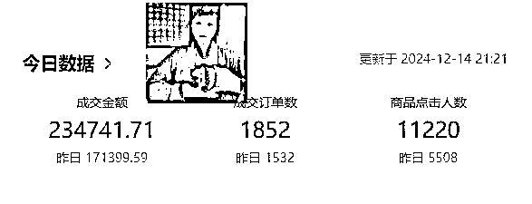
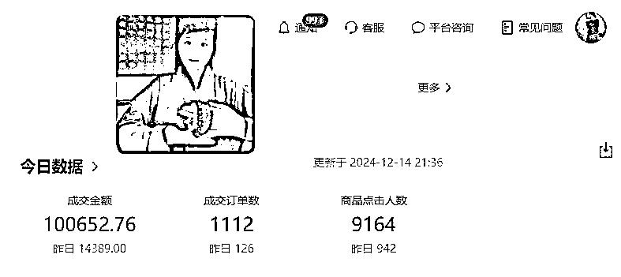
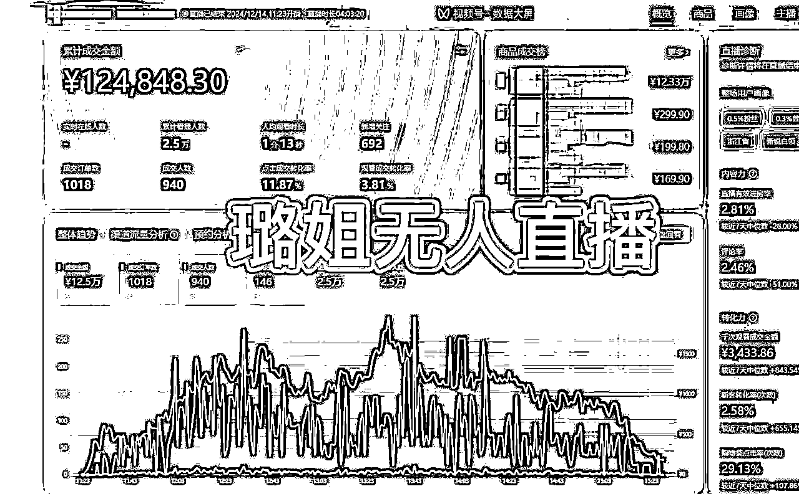
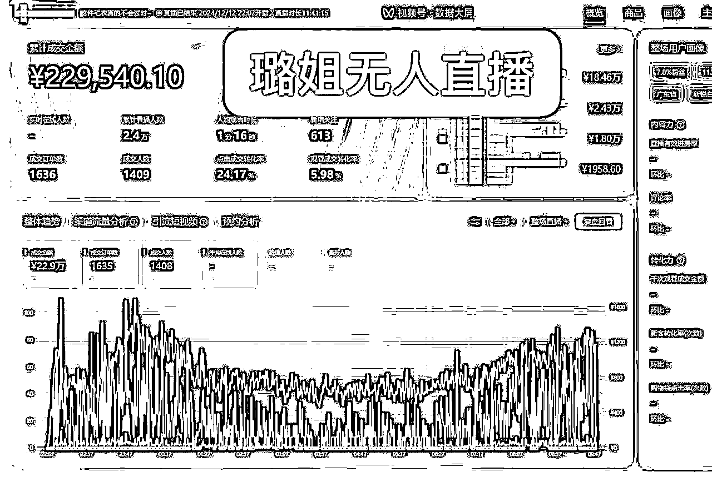
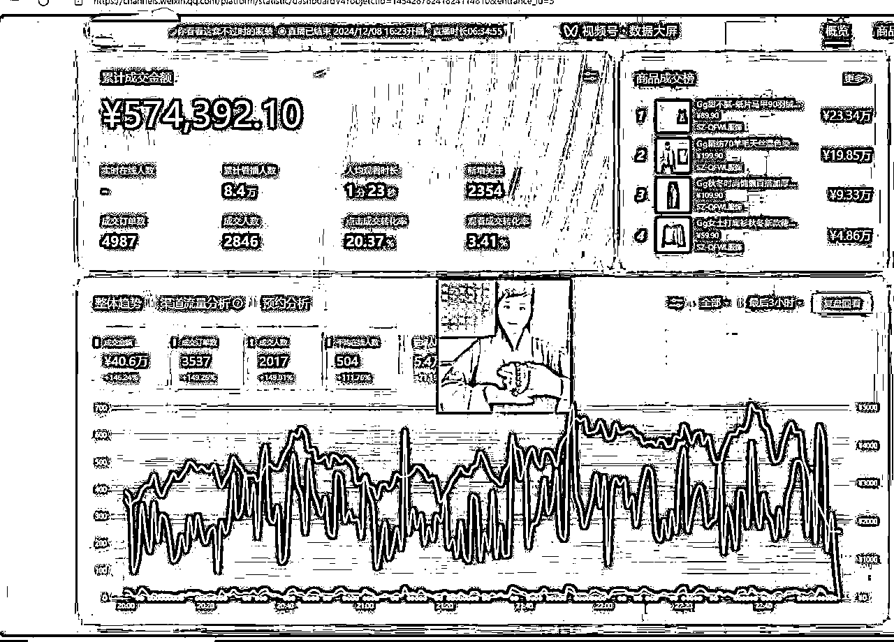
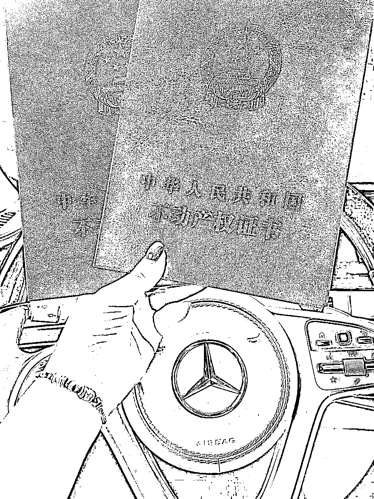
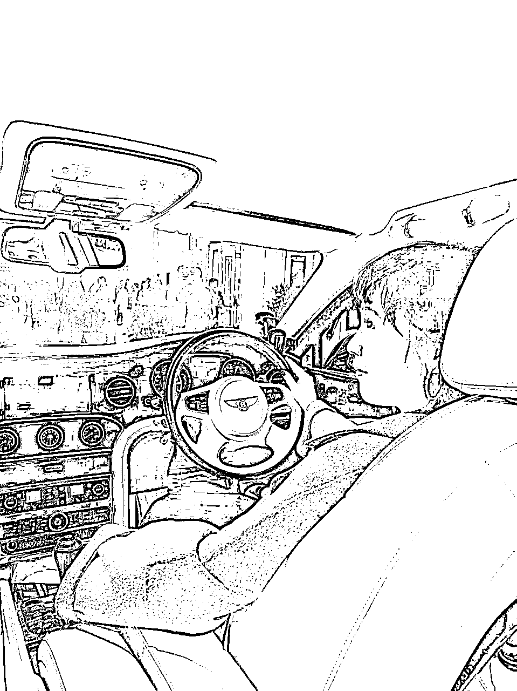
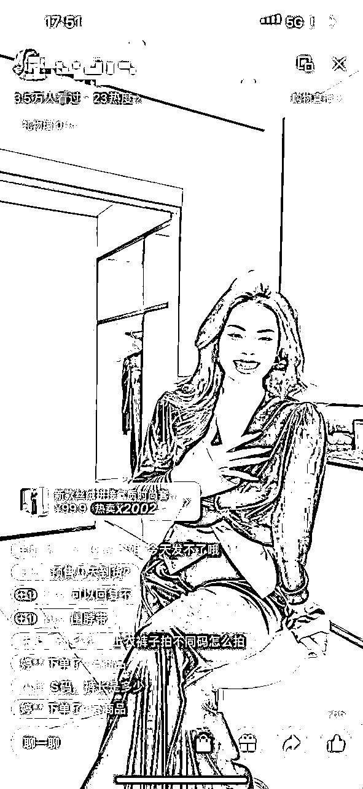
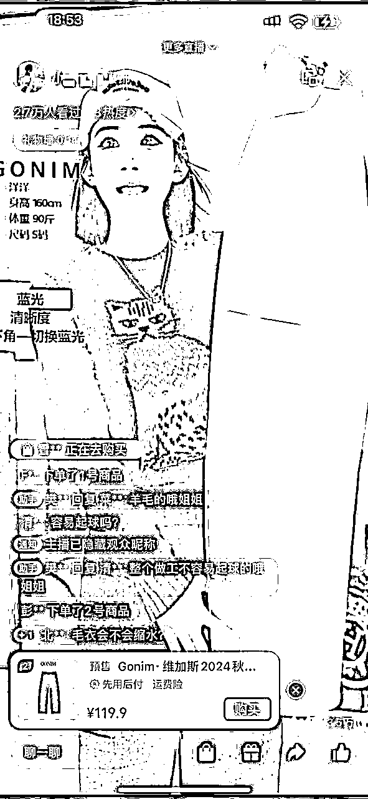
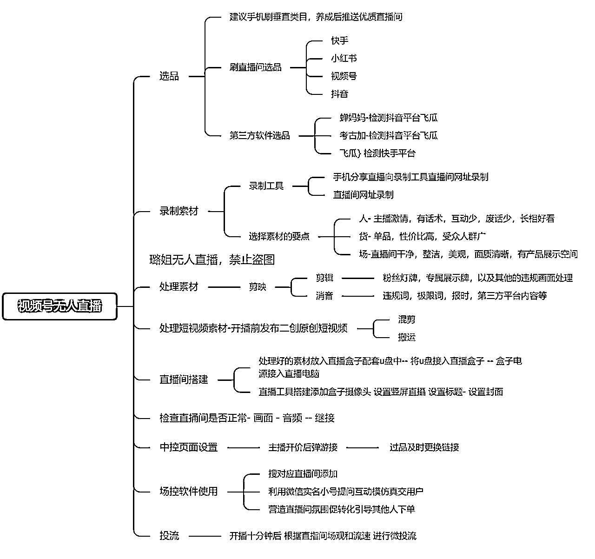

来源：https://r7weuqivm5.feishu.cn/docx/Oyk3dl0DVoeoU8xcr1acLprvn5f
熟悉我的生财圈友，都知道我做了4年无人直播了，从义乌小单间到现在杭州500平方公司，快手无人直播到抖音再到快手，2个平台反复循环找机会，大起大落过，直到今年9月有个同行朋友问我，做视频号无人了吗？才幡然醒悟，对哦！！可以考虑视频号/
前几天，成为了生财有术的传术师，好激动! 看到其他大神的精华分享，总觉得自己也要拿出看家本事了，所以抽时间写了这篇文章。希望能帮到各位生财圈友。
一定要看到最后，有无人直播电商实操思维导图！！！
研究了小半个月，也找到了稳定合作的视频号供应链，号商，有这个需求的朋友，可以分享给你们哈
先来个成果展示，数据100%真实。
都是我们自己操盘手最近打的号，划重点，不废号，不废号！
后悔了，后悔没早点做视频号无人直播电商。





如果大家对无人直播不了解，可以看我之前的有关抖音无人直播的分享，模式差不多的
别再问我，无人直播能不能做，
如果不能做，我也没办法在广州买2套房，1辆奔驰1辆宾利吧


质疑没有意义，静下心来，听我分析无人直播怎么做的逻辑和方式方法才最重要
做过真人直播电商的朋友应该懂得，真的很难
直播电商需要投入较多的人力和物力资源，包括主播团队、直播设备、场地布置等。
出镜的主播一个月最少15k，还有提成，再加上有经验的中控配合，也是月薪10k+，最终老板还没主播赚得多
此外，为了吸引观众和提高销量，商家还可能需要支付额外的推广费用，这无疑增加了运营成本。
直播电商的销售具有很大的不确定性， 一场 成功的直播可能会瞬间带来大量的订单，这 对商家的库存管理和物流配送提出了更高的要求。库存过多或过少都会影响商家的利益
在竞争激烈的市场环境下，为了吸引消费者，其他商家可能会采取低价策略，这将直接压缩产品的利润空间。同时， 平台佣金、主播分成等因素也会进一步侵蚀商家的利润。
高质量的直播需要稳定的技术支持，包括流畅的直播流、 清晰的音视频传输等。技术故障不仅会影响直播的效果，还可能影响商家的品牌形象。
视频号直播凭借其腾讯、微信强大的流量基础、高效的用户互动、强大的商业转化能力、全面的技术支持和便捷的使用体验，成为了一个极具吸引力的直播平台。
无论是个人内容创作者还是企业品牌，都可以通过视频号直播实现内容传播和商业价值的最大化。
微信是中国最大的社交媒体平台之一，拥有超过10亿 的活跃用户。视频号依托于微信的庞大用户基数，能够 迅速吸引大量观众。
视频号支持直播带货功能，创作者和企业可以通过直播 销售产品，实现即时转化。
提供多种广告投放方式，帮助品牌和企业精准触达目标 用户，提升营销效果。
视频号的操作界面简洁明了，用户可以轻松上手，无需 复杂的培训或技术支持。
相比其他直播平台，视频号的启动和运营成本较低，适 合个人创作者和中小企业使用。
提供高质量的直播画面，确保用户观看体验。
采用先进的技术手段，减少直播延迟，保证实时互动的 流 畅 性
腾讯提供了强大的技术支持，确保视频号直播的稳定性 和 可 靠 性。
以上都是微信视频号的官方话哈，简单来说，视频号电商直播可以卖客单价高的产品，顾客消费力高，素质高而且退货率低
节省人力成本：无人直播不需要真人主播、 助播、控场人员等，大幅降低了人力成本。 运营成本低：自动化运行减少了日常运营和维护的成本，提高了整体运营效率。
无需租赁专门的直播间或购 买昂贵的专业设备，简化了硬件需求
通过大数据和人工智能技术，无人直播可以分析观众的兴趣，和行为，提供个性化的推荐内容，提升观看体验。
无人直播可以用于销售产品，通过直播展示和推荐，提高销售转化率 。无人直播平台可以接受广告投放， 为品牌提供宣传渠道。
无人直播通过预先录制和剪辑好的视频进行播放，减少了现场直播中的不确定因素和技术故障的风险。提前录制的内容可以经过多次编辑和优化，确保内容的质量
女装为主，临近过年，置办冬装新衣，客单价在120元，男装做户外风衣，马甲
另外还有生鲜食品，酒水
我找的供应链还是挺厉害的，基本是95%和原版一样。所以链接内容都是可以直接复制


重点

另附
● CPU:12400f-i5
● 内存：推荐16G
● 机械硬盘：3T
● 显卡：2060
● 不限运营商，上行网络要求50M 以上，单机单IP
对硬盘要求高，其他都是普通配置。注意，一定要单机单IP！！